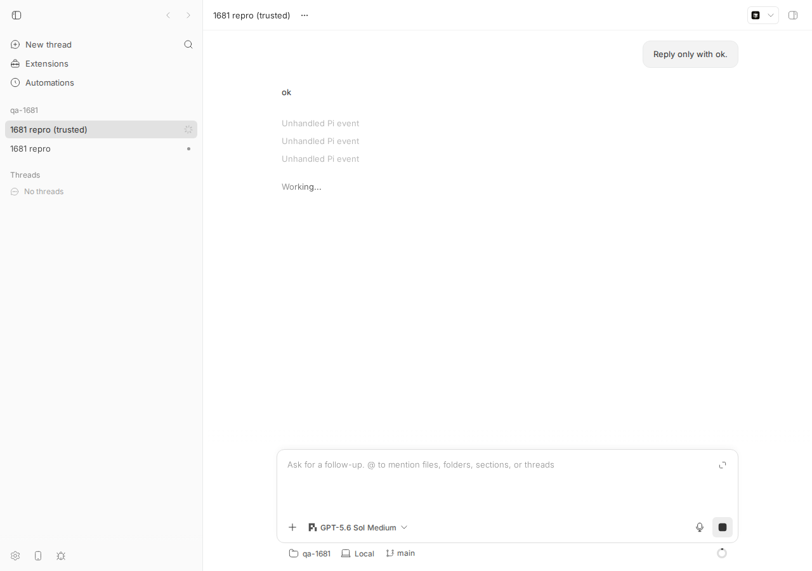
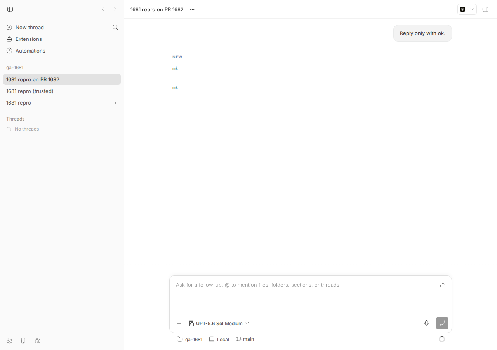

#1681 · Fix Pi process notification wake projection
TL;DR
Plain-language framing. Pi (the pi provider) lets extensions inject messages into a session. The third-party @aliou/pi-processes extension runs background shell commands and, when one finishes with onSuccess: "turn", calls pi.sendMessage({customType: "ad-process:notification", content: "<process_event …>", …}, {triggerTurn: true}). Pi then starts a new LLM turn on its own while bb thinks the thread is idle. bb's Pi bridge forwards every Pi SDK event to bb's translator (packages/agent-runtime/src/pi/event-translation.ts) which turns them into thread events for the UI/CLI.
What the user sees. After the process finishes, the thread flips to "Working…", shows no input, and never finishes: the spinner stays until the user presses stop. In a dev build (or with the "show unhandled provider events" setting on) three "Unhandled Pi event" rows appear instead of the process event and the assistant's answer.
What is actually wrong. Two schema gaps in the translator. (1) The custom message's message_start/message_end SDK envelopes have role: "custom", which the translator neither handles nor whitelists, so they become provider/unhandled. (2) Pi's agent_end.messages history contains that custom message with string content; bb's piConversationMessageSchema only accepts an array of content blocks, so the whole agent_end is rejected as unhandled and no turn/completed is emitted. Because the turn was started by Pi (not by a bb prompt), bb's usual pi/prompt/settled fallback never fires, so the turn is stuck forever. I reproduced both live with a 30-line stand-in extension and with a 100-line unit test that fails on main.
PR #1682 fixes (2) generically (good) and (1) narrowly (only for the literal customType ad-process:notification). It projects the notification as an item/completed userMessage event, but nothing in @bb/thread-view, the app or the CLI renders provider-emitted userMessage items any more, so its headline claim "process event is visible as turn input" is false end to end (verified live: two consecutive "ok" assistant rows and nothing between them). Its "no text response" warning is dead code because Pi emits agent_start before the custom message_start, the opposite of the order its tests feed. Verdict: request changes.
Claims vs findings
| Claim (issue body) | Status | Evidence |
|---|---|---|
Pi process notifications with attention: "turn" "could appear not to wake an idle thread" | Verified (as "wakes but never completes") | Live: turn 2 of thr_jehzdb5b6v starts (turn/started seq 12) and never gets turn/completed; thread status stays active (live-events-main.txt, screenshot below). |
bb translated the notification's sdk/message_start and sdk/message_end envelopes as provider/unhandled | Verified | seq 13/14: provider/unhandled rawType=sdk/message_start role=custom, …message_end role=custom. Cause: visibility.ts maps role custom → unknown → coverage unknown → emitted. |
| The process input was absent from the projected turn | Verified | No user-visible input event exists for turn 2 on main (only turn/started); on the PR branch an event exists but is not rendered (see PR review). |
Pi includes the custom process message in agent_end.messages with string content; bb expected array content and rendered the terminal envelope as "Unhandled Pi event" | Verified | seq 21 provider/unhandled rawType=sdk/agent_end; CustomMessage.content: string | (TextContent|ImageContent)[] in pi-coding-agent 0.84.0 core/messages.d.ts:35; bb schema at event-translation.ts#L171-L181. Unit repro shows the same three unhandled events. |
| "When Pi returned an empty assistant message, the UI showed no useful activity" | Partially verified | The stuck turn is independent of whether the assistant text is empty; in my run the model answered "ok" and the UI still showed only "Working…" (delta-only agentMessage never completed because agent_end was rejected). Empty text just makes it look emptier. |
Expected: one idle turn notification starts exactly one projected turn; message_end/clustered notifications don't duplicate; idle context/ignore don't start turns | Reasonable | Matches Pi semantics (sendCustomMessage: idle + triggerTurn → _runAgentPrompt; idle without trigger → append + emit message_start/message_end only). Note that on real Pi the bb turn is opened by agent_start, which precedes the custom message_start. |
| Expected: "Empty or missing assistant output produces an explicit warning" | Design choice, not a bug | Nothing in bb promises this today; PR #1682's implementation of it never fires on real Pi (ordering, see PR review). |
Reproduce with a Pi-managed command such as sleep 5; echo done | Verified with a stand-in extension | @aliou/pi-processes is not installed here; a 30-line extension sending the identical message shape via pi.sendMessage(…, {triggerTurn:true, deliverAs:"steer"}) reproduces it (fake-processes.extension.ts). The message shape was copied from pi-processes 0.10.9 extensions/processes/notification-sender.ts. |
Environment
- bb
16ceb3a54(main, 2026-08-18), worktree/home/sawyer/projects/bb/.claude/worktrees/wf_242c3e11-a10-11; dev instance app:13268, server:21268, host daemon:29268, data dir/home/sawyer/.bb-dev/projects-bb-.claude-worktrees-wf_242c3e11-a10-11-7b71b81c9d83. - Linux 7.0.0-29-generic, node v24.18.0,
@earendil-works/pi-coding-agent0.84.0 (bb's pinned Pi SDK), Pi modelopenai-codex/gpt-5.6-sol(from~/.pi/agent/settings.jsondefaults). @aliou/pi-processes 0.10.9 tarball inspected for the message shape (not installed). - Project
proj_uhfhsvtirj→ local path/tmp/bb-1681-scratch(scratch git repo containing.pi/extensions/fake-processes.ts). Threads:thr_vhxg6p67r8(extension not loaded, project untrusted — control),thr_jehzdb5b6v(main, bug),thr_7mepbbb6s7(PR #1682 branch). - Pi only loads project-local
.pi/extensionsfor trusted projects, and bb's bridge has no trust prompt (configured-services.tsresolveProjectTrusted). To avoid touching~/.pi, the host daemon was started withPI_CODING_AGENT_DIR=/tmp/bb-1681-piagent(a copy of~/.pi/agent/{auth,settings,models-store}.jsonplus trust.json trusting/tmp/bb-1681-scratch).
Minimal reproduction
A. Unit-level (no accounts needed, fails on main)
File: 1681/repro/issue-1681-process-notification.repro.test.ts — copy to packages/agent-runtime/src/pi/. It feeds the translator the exact sdk/message sequence Pi emits for an idle sendCustomMessage(msg, {triggerTurn:true}): agent_start → message_start(custom) → message_end(custom) → agent_end whose messages contain the custom entry with string content.
$ cd packages/agent-runtime && pnpm exec vitest run src/pi/issue-1681-process-notification.repro.test.ts translated: [ "turn/started", "provider/unhandled(sdk/message_start)", "provider/unhandled(sdk/message_end)", "provider/unhandled(sdk/agent_end)" ] × translates an idle attention:turn notification into one visible turn with input and completion AssertionError: expected [ …3 provider/unhandled events… ] to deeply equal [] ❯ src/pi/issue-1681-process-notification.repro.test.ts:84:72 Test Files 1 failed (1)
Expected: no provider/unhandled, one turn/started, a visible input item, and turn/completed. Actual: assertion (1) fails first (three unhandled events); assertions (3) and (4) would fail too — there is no input item and no turn/completed at all. Full log: unit-repro-main.log. On the PR #1682 branch the same test passes (unit-repro-pr1682.log).
/**
* Repro for get-bb/bb#1681: Pi process notifications (custom messages sent by
* a Pi extension with `triggerTurn: true`, e.g. @aliou/pi-processes
* `ad-process:notification`) are not projected by bb.
*/
import { describe, expect, it } from "vitest";
import { turnScope } from "@bb/domain";
import { createPiEventTranslator } from "./event-translation.js";
const CONTENT =
'<process_event type="lifecycle" kind="success" process_id="proc_551c" name="sleep">Process completed successfully</process_event>';
const customMessage = {
role: "custom",
customType: "ad-process:notification",
content: CONTENT, // string, as CustomMessage.content allows
display: true,
details: { attention: "turn", kind: "success", processId: "proc_551c" },
timestamp: 1_786_919_243_630,
};
function sdk(message: unknown) {
return {
jsonrpc: "2.0" as const,
method: "sdk/message",
params: { threadId: "pi-thread-1", message },
};
}
describe("issue #1681 — Pi process notification wake", () => {
it("translates an idle attention:turn notification into one visible turn with input and completion", () => {
const translator = createPiEventTranslator({ providerId: "pi" });
const context = { threadId: "pi-thread-1" };
const all = [
sdk({ type: "agent_start" }),
sdk({ type: "message_start", message: customMessage }),
sdk({ type: "message_end", message: customMessage }),
sdk({
type: "agent_end",
willRetry: false,
messages: [
customMessage,
{
role: "assistant",
content: [{ type: "text", text: "The sleep process finished." }],
stopReason: "stop",
api: "openai-responses",
provider: "openai-codex",
model: "gpt-5.6-sol",
usage: { input: 10, output: 5, cacheRead: 0, cacheWrite: 0, totalTokens: 15,
cost: { input: 0, output: 0, cacheRead: 0, cacheWrite: 0, total: 0 } },
timestamp: 1_786_919_246_950,
},
],
}),
].flatMap((event) => translator.translatePiEvent(event, context));
const types = all.map((event) =>
event.type === "provider/unhandled" ? `provider/unhandled(${event.rawType})` : event.type);
console.log("translated:", JSON.stringify(types, null, 2));
// (1) the custom message_start/message_end envelopes must not surface as unhandled
expect(all.filter((event) => event.type === "provider/unhandled")).toEqual([]);
// (2) exactly one turn starts
expect(all.filter((event) => event.type === "turn/started")).toHaveLength(1);
// (3) the process event is visible as turn input
expect(all).toContainEqual(expect.objectContaining({
type: "item/completed", scope: turnScope("turn-1"),
item: expect.objectContaining({ type: "userMessage" }) }));
// (4) the turn completes (agent_end with a string-content custom entry must be accepted)
expect(all).toContainEqual(expect.objectContaining({
type: "turn/completed", scope: turnScope("turn-1"), status: "completed" }));
});
});
B. Live (real Pi session, real model, stand-in extension)
- Scratch repo with the extension (fake-processes.extension.ts; it waits 5 s after the first
agent_end, then sends the pi-processes message shape withtriggerTurn: true):mkdir -p /tmp/bb-1681-scratch/.pi/extensions && cp fake-processes.extension.ts /tmp/bb-1681-scratch/.pi/extensions/fake-processes.ts cd /tmp/bb-1681-scratch && git init -q && git add -A && git -c user.email=a@b -c user.name=a commit -qm init
- Trusted Pi agent dir (Pi refuses project extensions in untrusted projects; bb has no trust prompt):
mkdir -p /tmp/bb-1681-piagent && cp ~/.pi/agent/{auth,settings,models-store}.json /tmp/bb-1681-piagent/ echo '{"/tmp/bb-1681-scratch": true}' > /tmp/bb-1681-piagent/trust.json PI_CODING_AGENT_DIR=/tmp/bb-1681-piagent scripts/bb-dev-app current # host daemon inherits the env var - Project + Pi thread (Pi requires
--permission-mode full):eval "$(scripts/bb-dev-app env)" curl -s -X POST $BB_SERVER_URL/api/v1/projects -H 'content-type: application/json' \ -d '{"name":"qa-1681","source":{"type":"local_path","path":"/tmp/bb-1681-scratch","hostId":"host_s9e9g2aig9"}}' # -> proj_uhfhsvtirj pnpm bb:dev thread spawn --project proj_uhfhsvtirj --provider pi --permission-mode full --title "1681 repro" --prompt "Reply only with ok." --json # -> thr_jehzdb5b6v - Wait ~20 s, then dump events (dump-events.py):
$ python3 dump-events.py $BB_SERVER_URL thr_jehzdb5b6v thread thr_jehzdb5b6v status=active displayStatus=active 1 client/turn/requested thread input=[{"type": "text", "text": "Reply only with ok.", "mentions": []}] 2 client/thread/start thread 3 thread/identity thread 4 turn/started bt9a5255d9-1-1 5 turn/input/accepted bt9a5255d9-1-1 6 item/started bt9a5255d9-1-1 agentMessage null 7 item/agentMessage/delta bt9a5255d9-1-1 8 item/completed bt9a5255d9-1-1 agentMessage "ok" 9 thread/tokenUsage/updated bt9a5255d9-1-1 10 turn/completed bt9a5255d9-1-1 status=completed 11 thread/contextWindowUsage/updated bt9a5255d9-1-1 12 turn/started bt9a5255d9-1-2 <-- Pi's agent_start (extension-triggered turn) 13 provider/unhandled bt9a5255d9-1-2 rawType=sdk/message_start role=custom 14 provider/unhandled bt9a5255d9-1-2 rawType=sdk/message_end role=custom 15 item/started bt9a5255d9-1-2 reasoning [] 16 item/reasoning/textDelta bt9a5255d9-1-2 17 item/reasoning/textDelta bt9a5255d9-1-2 18 item/completed bt9a5255d9-1-2 reasoning ["**Confirming readiness with ok**"] 19 item/started bt9a5255d9-1-2 agentMessage null 20 item/agentMessage/delta bt9a5255d9-1-2 21 provider/unhandled bt9a5255d9-1-2 rawType=sdk/agent_end role=None <-- agent_end rejected; no turn/completed ever 22 thread/contextWindowUsage/updated bt9a5255d9-1-2Expected: seq 13 is a visible input row, seq 21 isitem/completed agentMessage "ok"+turn/completed, thread returns toidle. Actual: threeprovider/unhandled, no completion, thread staysactiveindefinitely (still active minutes later when the screenshot was taken). Raw events: live-events-main.raw.json. The unhandledmessage_startpayload (seq 13) is exactly the pi-processes shape:{"type":"message_start","message":{"role":"custom","customType":"ad-process:notification", "content":"<process_event type=\"lifecycle\" kind=\"success\" process_id=\"proc_551c\" name=\"sleep-done\">Process completed successfully: sleep 5; echo done</process_event>", "display":true,"details":{"kind":"success","processId":"proc_551c","processName":"sleep-done","command":"sleep 5; echo done","timestamp":1787037716911,"summary":"Process completed successfully","attention":"turn"}, "timestamp":1787037716911}}

includeProviderUnhandledOperations; production hides them unless the setting is on) and "Working…" with the sidebar spinner that never stops. No process input and no second "ok" are shown even though the model answered.Root cause
1. Pi emits custom-role message boundaries that bb classifies as unknown. Pi's AgentSession.sendCustomMessage (pi-coding-agent 0.84.0 core/agent-session.js:1068-1097) either runs _runAgentPrompt(appMessage) (idle + triggerTurn) or appends and emits message_start/message_end. Either way the bridge forwards them verbatim as sdk/message (bridge.ts#L416-L440). The translator's piEventTypeSchema does not include message_start/message_end and PI_IGNORED_EVENT_TYPES only lists agent_settled (L136-L140), so translation returns [] and the envelope path falls back to buildUnhandledPiEvent (L549-L575). For user/assistant/toolResult boundaries the visibility metadata rates them noise and drops them; role custom maps to unknown → coverage unknown → the event is emitted (visibility.ts#L132-L143, #L313-L328, provider-unhandled-event.ts#L92-L100). This is cosmetic on its own but means the notification content is neither shown nor persisted as input.
2. agent_end is rejected because the history contains string content — this is what strands the turn.
const piConversationMessageSchema = z.object({
role: z.string(),
content: z.array(piMessageContentBlockSchema).optional(), // <-- string content (valid for CustomMessage/UserMessage) fails
…
const piAgentEndEventSchema = z.object({
type: z.literal("agent_end"),
messages: z.array(piConversationMessageSchema), // <-- whole event fails
…
case "agent_end": {
const piEvent = piAgentEndEventSchema.safeParse(event);
if (!piEvent.success) {
return buildUnexpectedEvent(event); // <-- provider/unhandled instead of turn/completed
}
(event-translation.ts#L171-L181, #L186-L192, #L771-L775). Pi's own type is CustomMessage.content: string | (TextContent | ImageContent)[]; bb-originated prompts always use arrays (Pi's prompt() builds [{type:"text",…}]), which is why this was never seen before extensions started injecting string content. For bb-started turns the bridge's pi/prompt/settled notification (emitted when session.prompt() resolves) would still close the turn; an extension-triggered turn has no prompt call, so nothing else ever emits turn/completed. The runtime therefore keeps the thread active and (as a side effect) also stops the idle-session bookkeeping for that thread.
Why the symptom follows. agent_start opens bb turn N+1 (seq 12) with no input; the custom boundaries become unhandled rows (13/14); the streamed answer stays an uncompleted delta (19/20) because completion is derived from agent_end; agent_end is rejected (21) → no completion → spinner forever. The raw payload of the unhandled agent_end is even lost: toProviderRawEvent replaced it with "Provider raw event params were not JSON-serializable." (Pi's message objects contain undefined fields), which is why the reporter had to reason from a separate recorded example.
Deeper/underlying. bb has no concept of provider-originated turn input. User input is modelled by the server's client/turn/requested + turn/input/accepted; the provider-side userMessage item type still exists in @bb/domain (provider-event.ts#L301-L309) but since the daemon-protocol cutover (3f553d7b8) nothing in @bb/thread-view projects it — item/completed for a userMessage falls to the "unhandled/debug" bucket (build-event-projection.ts#L994-L1010, parse-error-message.ts#L112-L126). Any correct fix that wants the notification visible must add a rendering path, not just a translator event. Separately, the host daemon's idle-provider-session reaper (IDLE_PROVIDER_SESSION_REAP_AFTER_MS = 30 min, gated by the provider-session-reaping experiment; Pi reports sessionRestorable: true) will dispose an idle Pi session together with the extension that owns the background process, so a process that outlives 30 idle minutes can never wake the thread — a genuine "does not wake" case that neither the issue nor the PR addresses (not reproduced here; would need a 30-minute wait).
Proposed fix (first principles)
- Accept every valid Pi
AgentMessage.contentshape inpiConversationMessageSchema(z.union([z.string(), z.array(block)])) — exactly what PR #1663 / the first commit of #1682 does. This alone unsticks the turn and is the minimal, safe fix. Also maketoProviderRawEventstripundefined(JSON round-trip) so unhandled payloads are not replaced by the serialization-error stub. - Handle custom-role message boundaries generically, not by customType literal: in the translator, treat
message_startwithrole: "custom"as the input of the current/new turn whendisplay === true(any extension: pi-processes, pi-background-tasks, Pi's ownnextTurnmessages), and ratemessage_end/non-display custom boundaries asnoiseinvisibility.tsso they never surface as "Unhandled Pi event". Whether the input is a "user" row or a "system/extension" row is a product decision, but pick one that renders. - Give provider-originated input a rendering path. Either (a) project
item/completeduserMessagein@bb/thread-viewas a user row with a non-user initiator (touchbuild-event-projection.ts, timeline/CLI formatters, and add a snapshot test), or (b) emit an operation-style event (e.g.provider/warning-like "Process notification" row) that already renders. Option (a) is cleaner and also fixes the domain drift (schema type nobody consumes). Both are inside the server/app side; the wire shape (ThreadEvent) does not change so noHOST_DAEMON_PROTOCOL_VERSIONbump is needed unless a new event type is introduced. - Follow-up: exempt Pi sessions with live extension state (or all Pi sessions with an active background process) from idle reaping, or document that background processes do not survive the reap.
Risk: (2) must not open a bb turn for idle context/ignore notifications (Pi emits message_start without agent_start); key on state.currentTurnId, as the PR does. Tests must use the real order agent_start → message_start(custom).
PR review
#1682 Fix Pi process notification turns (draft, author ryanbbrown, agent-generated; stacked on #1663) — verdict: REQUEST CHANGES
What it changes (2 files, +579/−18, diff): (a) widens piConversationMessageSchema.content to string | block[] (commit 79c6d0904 = #1663); (b) adds piProcessNotificationEventSchema matching message_start/message_end whose message is role:"custom", customType:"ad-process:notification", string content, details.attention ∈ {turn,context,ignore}; on message_start it ensures a turn, emits an item/completed userMessage with the raw content, and returns [] for message_end/idle context/ignore; (c) tracks processNotificationTurnId to emit a provider/warning when such a turn ends without assistant text; (d) 9 new translator tests.
Does it address the root cause? (a) yes, generically — this is the part that fixes the stuck turn. (b) fixes the "Unhandled Pi event" rows only for one third-party customType literal; every other extension custom message still hits the same path. (c) is dead on real Pi. The projected input is not rendered anywhere, so the PR's own acceptance criterion "process event is visible as turn input" is not met.
Tests I ran. Checked out the PR (gh pr checkout 1682, merged base 16ceb3a54 locally, no conflicts). pnpm exec turbo run test --filter=@bb/agent-runtime --force: 30 files / 324 tests pass incl. my repro test (log). Live run on the PR branch (thr_7mepbbb6s7): the turn completes and no unhandled events are produced (live-events-pr1682.txt), but the app and bb thread log show no input row (live-thread-log-pr1682.txt):
$ bb thread log thr_7mepbbb6s7 ── User ──────────────────────────────────────────────────── Reply only with ok. ── Assistant ─────────────────────────────────────────────── ok ── Assistant ─────────────────────────────────────────────── ok <-- the process notification that triggered this turn is invisible

item/completed userMessage event (seq 13) exists in the event log and is dropped by the timeline projection.Findings (line numbers refer to the PR head 53ae25671):
| Severity | Where | Finding |
|---|---|---|
| High | packages/agent-runtime/src/pi/event-translation.ts:698-746 | Emits item/completed with item.type:"userMessage". No consumer renders provider-emitted userMessage items (thread-view: build-event-projection.ts falls through to the debug bucket; grep for "userMessage" in packages/thread-view/src, apps/app/src, apps/cli is empty). The PR's stated behavior "The process event is visible as turn input" is unmet; verified live and via CLI. Needs a rendering path (thread-view + app + CLI formatter + snapshot test) or a different event. |
| High | event-translation.ts:143-158, 698-746, 909-918, tests event-translation.test.ts ("projects one turn…", "coalesces…", "warns…", "keeps an accepted user prompt…") | Every new test feeds the notification before agent_start. Real Pi (pi-agent-core agent-loop.js:49-52, and live seq 12→13) emits agent_start first, so state.currentTurnId is already set when message_start arrives: startsProcessTurn is always false, processNotificationTurnId is never set, and the advertised "no text response" warning never fires. Probe test issue-1681-pr1682-order.review.test.ts fails on the PR branch (log). The onTurnFinish/processNotificationTurnId/warning code and the two tests are dead weight; either delete or re-key the feature on "turn had no client input". |
| Medium | event-translation.ts:143-158 | Keys on the third-party literal customType: "ad-process:notification" and a pi-processes-specific details.attention. Any other extension's sendMessage (e.g. pi-background-tasks, or pi-processes changing its type name) still yields "Unhandled Pi event" rows for message_start/message_end. The generic condition is role === "custom" (+ display); the attention gate can be replaced by "is a bb turn currently open" which is what the code effectively does anyway. Also array content (allowed by CustomMessage) is rejected by z.string(). |
| Medium | event-translation.ts:708-714 | Idle context notifications return []: Pi appends them to the model's context but bb records nothing, so the transcript silently diverges from what the model saw. At least persist them (hidden or as a system row) rather than dropping. |
| Low | event-translation.ts:589-601 | isProcessNotification is computed by a second safeParse on every sdk/message to suppress the unhandled fallback; cleaner to mark custom boundaries as noise in visibility.ts so the existing coverage filter does the job. |
| OK | layering / protocol | Change lives in the daemon-side translator (correct layer for provider translation); ThreadEvent shapes are unchanged so no HOST_DAEMON_PROTOCOL_VERSION bump is required. No casts or any. Item ids use the per-session itemIdPrefix (avoids the #1224 resume collision). |
| OK | commit 79c6d0904 (#1663 part) | The string-content widening is correct and sufficient to unstick extension-triggered turns; it should land regardless (ideally as #1663 alone). |
Verdict: REQUEST CHANGES. Land #1663 (string content) now. For #1682: make the input actually render, test the real event order, generalize beyond the ad-process:notification literal, and drop or fix the dead warning path.
Related issues
- #1633 — "Pi extension-triggered turn stays working after agent_end": the same string-content root cause, fixed by #1663 (open), on which #1682 is stacked.
- #1224 — Pi item-id collisions across resume (why the translator takes
itemIdPrefix). - Idle provider-session reaping (30 min) will kill Pi extensions with background processes; no issue filed yet as far as I can see.
Appendix
Commands run
# worktree at 16ceb3a54 pnpm install --frozen-lockfile --prefer-offline && pnpm exec turbo run build gh issue view 1681 --repo get-bb/bb --json title,body,state,labels,comments ; gh pr view 1682 ; gh pr view 1663 ; gh pr diff 1682 > 1681/pr1682.diff npm pack @aliou/pi-processes@0.10.9 # inspected extensions/processes/notification-sender.ts, handlers/notifications.ts, constants.ts cd packages/agent-runtime && pnpm exec vitest run src/pi/issue-1681-process-notification.repro.test.ts # FAILS on main scripts/bb-dev-app current # first attempt: project untrusted, extension not loaded (thr_vhxg6p67r8, control) PI_CODING_AGENT_DIR=/tmp/bb-1681-piagent scripts/bb-dev-app current curl -s -X POST http://localhost:21268/api/v1/projects … /tmp/bb-1681-scratch … host_s9e9g2aig9 # proj_uhfhsvtirj bb thread spawn --project proj_uhfhsvtirj --provider pi --permission-mode full --prompt "Reply only with ok." --json # thr_jehzdb5b6v python3 1681/repro/dump-events.py http://localhost:21268 thr_jehzdb5b6v dev-browser --headless … screenshot -> assets/1681-stuck-turn.png gh pr checkout 1682 ; git merge --no-ff 16ceb3a54 (local only) pnpm exec turbo run test --filter=@bb/agent-runtime --force # 30 files / 324 tests pass pnpm exec vitest run src/pi/issue-1681-process-notification.repro.test.ts # passes on PR pnpm exec vitest run src/pi/issue-1681-pr1682-order.review.test.ts # FAILS on PR (dead warning path) PI_CODING_AGENT_DIR=/tmp/bb-1681-piagent scripts/bb-dev-app current # PR branch bb thread spawn … --provider pi … # thr_7mepbbb6s7 ; dump-events ; bb thread log thr_7mepbbb6s7 ; screenshot -> assets/1681-pr1682-turn.png git checkout 16ceb3a54 ; pnpm dev:stop
Pi SDK evidence
# pi-coding-agent 0.84.0 dist/core/agent-session.js (sendCustomMessage)
else if (options?.triggerTurn) { // idle + triggerTurn
await this._runAgentPrompt(appMessage); // -> agent_start, message_start(custom), …, agent_end(messages incl. custom)
} else { // idle, no trigger (attention context/ignore)
this.agent.state.messages.push(appMessage);
this.sessionManager.appendCustomMessageEntry(...);
this._emit({ type: "message_start", message: appMessage });
this._emit({ type: "message_end", message: appMessage });
}
# pi-agent-core 0.84.0 dist/agent-loop.js
49: await emit({ type: "agent_start" });
50: await emit({ type: "turn_start" });
52: await emit({ type: "message_start", message: prompt });
# pi-coding-agent dist/core/messages.d.ts:35
content: string | (TextContent | ImageContent)[];
Control thread (extension not loaded)
thr_vhxg6p67r8 was created before the trust file existed; Pi silently skipped .pi/extensions, the thread completed normally and never woke. bb surfaces no diagnostic for "project extensions skipped because untrusted" — worth knowing when a user reports "the wake never happens".
Files
- issue-1681-process-notification.repro.test.ts, unit-repro-main.log, unit-repro-pr1682.log
- issue-1681-pr1682-order.review.test.ts, pr1682-order-probe.log
- fake-processes.extension.ts, pi-agent-trust.json, dump-events.py
- live-events-main.txt, live-events-main.raw.json, live-events-pr1682.txt, live-thread-log-pr1682.txt
- pr1682.diff, pr1682-agent-runtime-tests.log